GUINNESS' POSTER
Durant mon séjour en Irlande, j'ai croisé un nombre incalculable de fois des posters et des plaques qui vantaient la célèbre bière irlandaise. J'ai décidé de prendre en photo chacune de ces publicités, dans le but d'en faire par la suite un objet graphique qui les répertorie. Poster 40x60cm, impression sur papier chromé pour rappeler l'esthétique du fût et de la cannette de bière. Ceci n'est qu'un faible échantillon de toutes les affiches croisées.
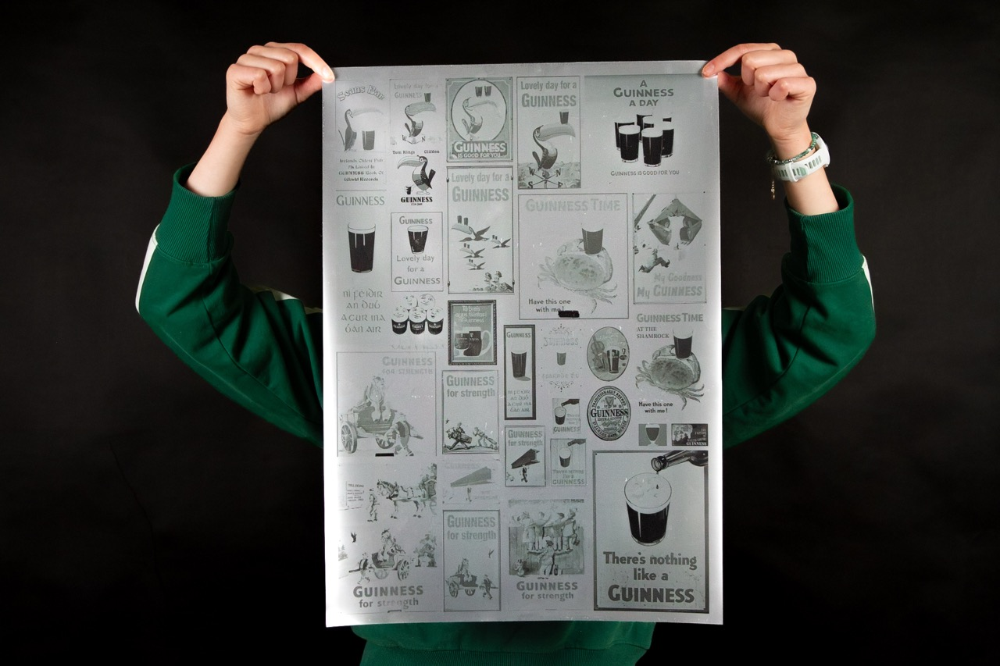
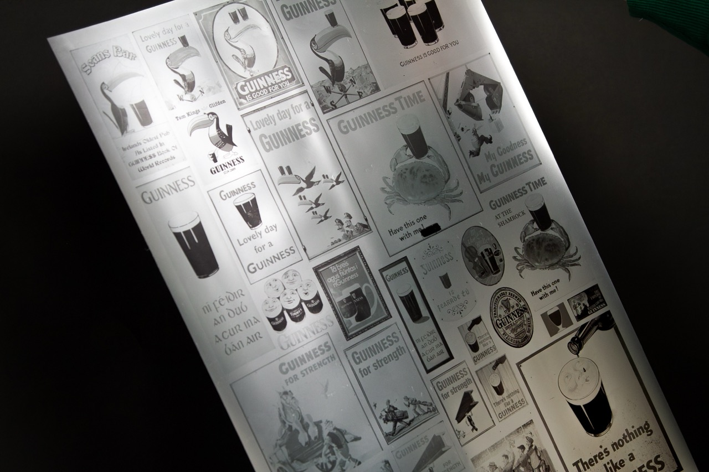
 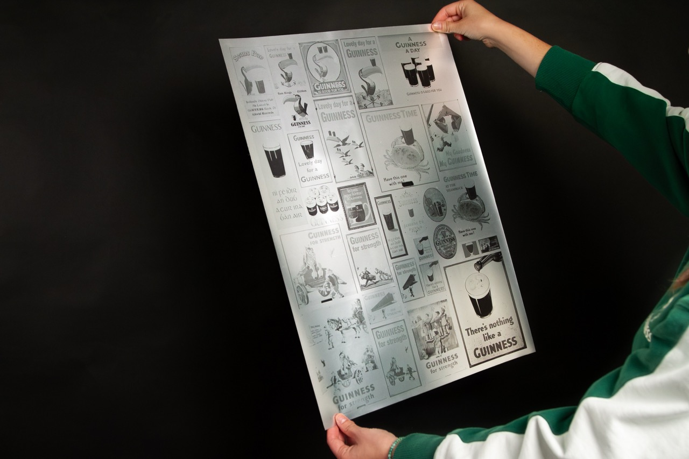
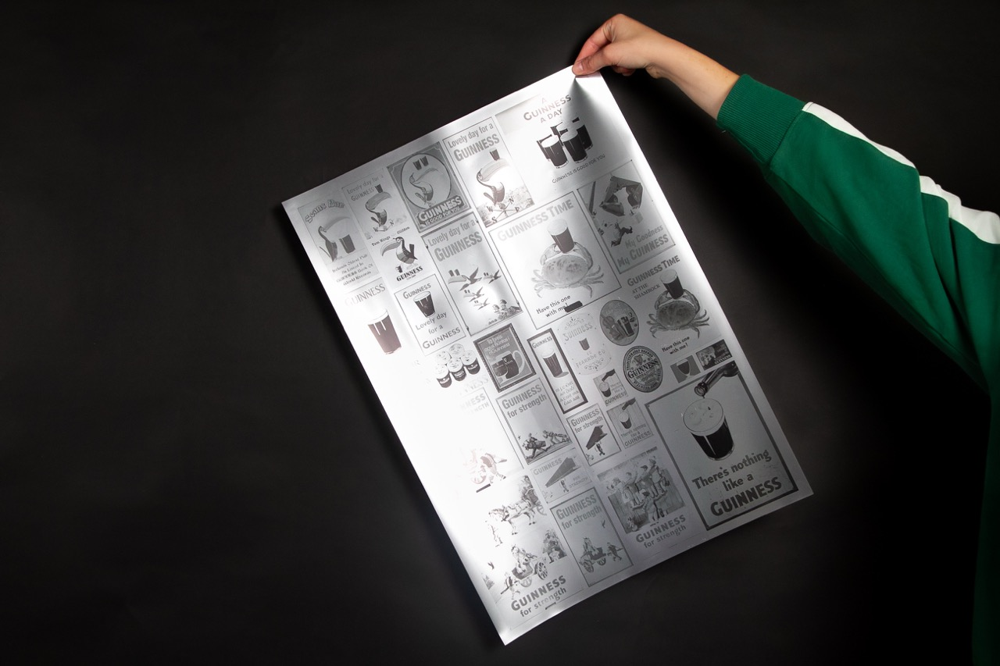
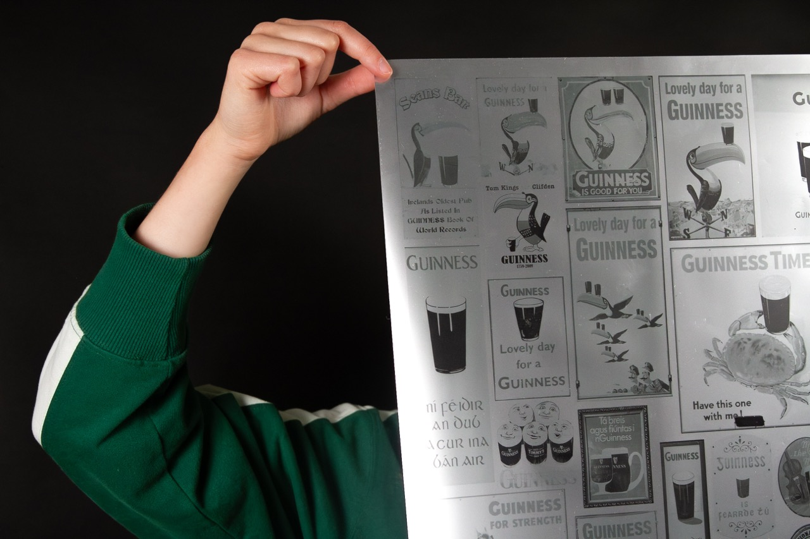
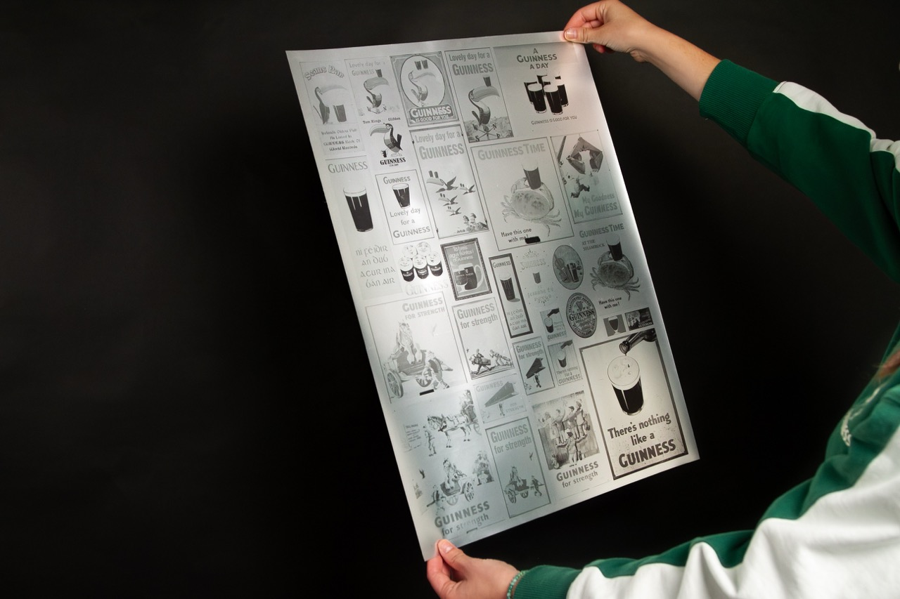
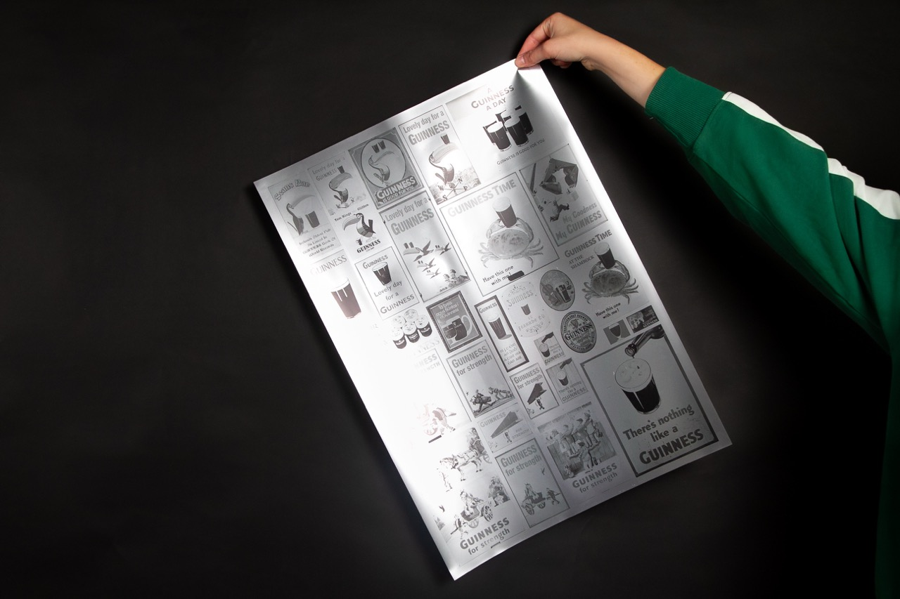
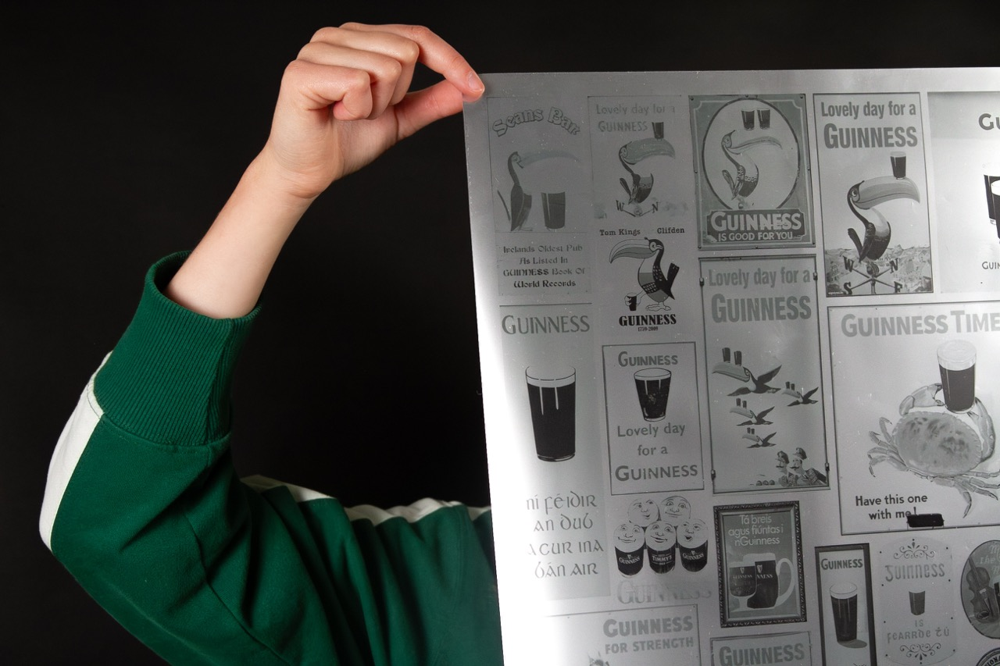
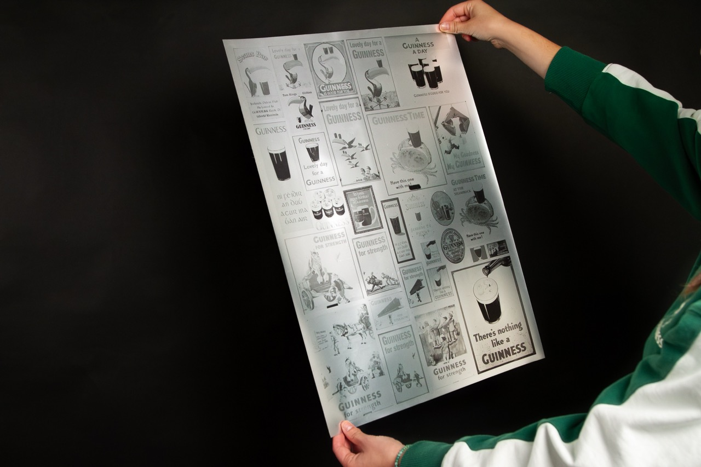
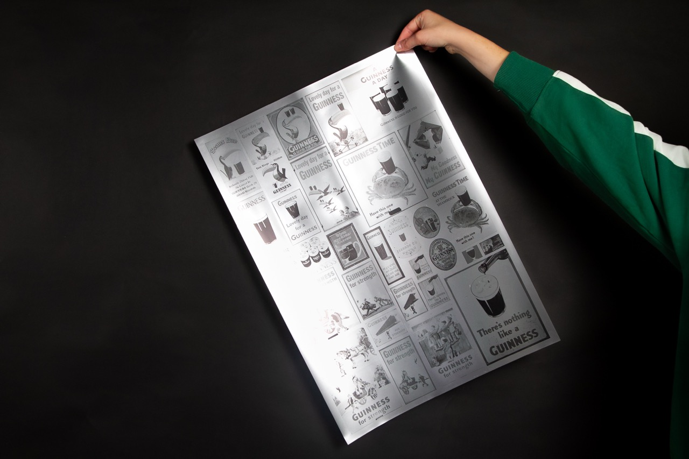
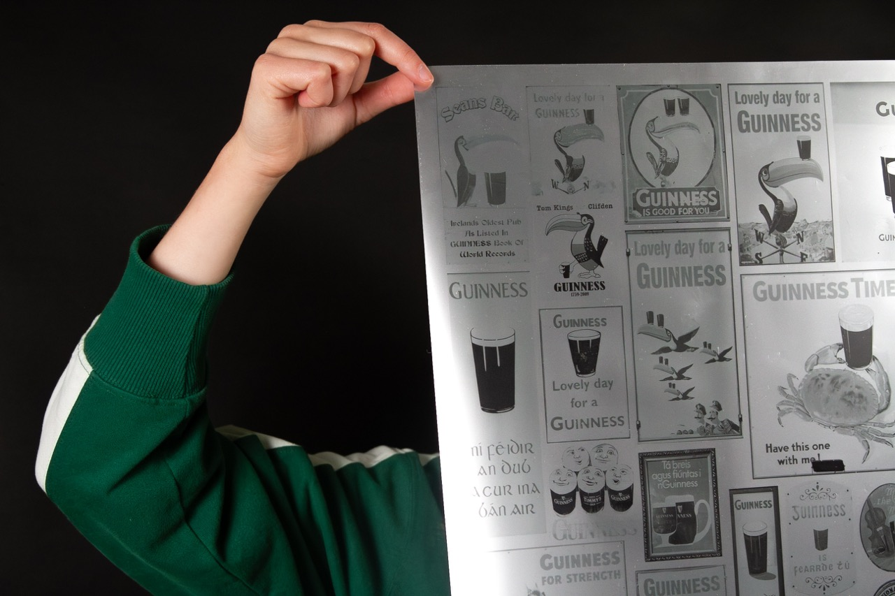
×